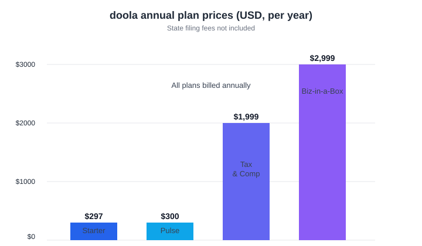

LLC for Non-US Founders: Formation, EIN, Banking & Taxes Guide
The short version
TL;DR: Yes, you can form a US LLC as a non-US founder with no visa, green card, Social Security number, or trip to the US. There is no citizenship or residency requirement to own an LLC in any US state. The real work is three things: picking a state, getting an EIN from the IRS, and opening a US business bank account. A service like doola bundles all three, and they explicitly work with founders outside the US (their own site says 175+ countries). Even a bare LLC comes with an annual filing obligation (Form 5472) you can't skip, so budget accordingly.Can a non-US resident form a US LLC?
Yes, and this is worth being blunt about because it surprises people: no US state requires citizenship, residency, or a visa to own an LLC. You can be the sole member, own 100% of the company, and run it entirely from abroad. Thousands of international founders do exactly this every year so they can accept US payments, bill US clients, and work with Stripe, PayPal, and marketplaces that expect a US entity.
There are two standard ways to set one up: file the paperwork yourself with the state, or pay a formation service to handle it. The DIY route works if you are comfortable with state forms, registered agent setup, and calling the IRS from abroad. If that sounds like a slog, a platform like doola exists specifically for this audience.
Which state should a non-US founder choose?
If you have no office, employees, or warehouse in the US, you can form your LLC in any state and pick purely on cost, privacy, and tax. Three names come up constantly for non-residents: Wyoming, Delaware, and New Mexico. All three have no state income tax for non-residents and do not list LLC member names on public filings.
Wyoming is the default pick for most non-residents: low fees and strong privacy. Delaware is the go-to if you might raise venture capital later, since investors understand it first. New Mexico is the budget option, though it is less familiar to banks and payment providers. If you plan to do business in one specific US state, form in that state instead and skip the games.
Do I need a US Social Security number or ITIN?
No SSN. That is the good news.
What you actually need is an EIN (Employer Identification Number) from the IRS. It is your business's federal tax ID, and you need it to open a bank account and file taxes. The quickest path for a non-resident is to call the IRS at 267-941-1099 (that number is confirmed on IRS.gov as the line to expedite an EIN for a foreign entity), or to fax or mail Form SS-4. The online EIN application is only available to people with a US SSN or ITIN, so it will not work for you.
An ITIN is a separate 9-digit number (it always starts with 9) issued to nonresidents who cannot get an SSN. The IRS describes it as a tax processing number, not an SSN substitute. You apply with Form W-7. Not every foreign LLC owner needs one, but you may need it to file a US return or claim a tax treaty benefit. Whether you need it depends on your income and home country, so treat this as a sit-down-with-an-accountant question, not a guess.
How do I open a US bank account from abroad?
This is usually the hardest step, and the honest answer is that the path depends on the bank. Traditional US banks like Chase or Bank of America will accept foreign national owners, but most want you to appear in person with a passport, your EIN letter, your articles of organization, and an operating agreement.
If you cannot travel, online business banks are the realistic option, and Mercury is the one most founders name first. Note the fine print: Mercury is a fintech company, not an FDIC-insured bank. Its banking services run through partner banks (Choice Financial Group and Column N.A., both FDIC members). You will need a passport or US government ID for each majority owner. Others to know in the same space: Wise and Relay, and payment platforms like Stripe and PayPal can carry you in the early days while you sort out traditional banking.
What about taxes and annual compliance?
Here is where the "easy" part ends. A foreign-owned single-member LLC is a "disregarded entity" for US tax purposes, and under section 6038A of the tax code the IRS requires it to file Form 5472 every year, attached to a pro-forma Form 1120. It does not matter that the LLC had no US income. If a foreign person owns 25% or more and there are reportable transactions with related parties, the filing is required. Missing it often means a penalty, and those add up quickly.
If your LLC earns US-source income, you are in US tax territory and should talk to an international tax CPA before your first year is up. If your LLC serves clients entirely outside the US, your US federal tax bill may be zero, but the 5472 informational filing can still be mandatory. Either way, do not let "informational" fool you into ignoring it.

Is doola a good fit for non-US founders?
doola is a formation and back-office platform that was built around exactly this use case. Their own FAQ answers "Do I need to be a US citizen to work with doola?" with a direct no, and says they work with entrepreneurs from around the world. Their homepage claims founders in 175+ countries, and they are backed by Y Combinator, among others.
Their cheapest plan, Starter, is $297 per year plus state fees. According to their pricing page, that covers your LLC filed in 1-2 business days, an EIN, a US business address, registered agent service, and guidance to open a US bank account. They integrate directly with Mercury for the banking step.
For a non-US solo founder, the Starter plan is the honest recommendation: it covers formation, the EIN, and bank setup, which are the three things you cannot do easily from abroad. Just remember that a US LLC is a long-term commitment. You are signing up for yearly state and federal filings, a registered agent, and clean separation of business money from personal money. None of that upkeep disappears just because you do not live in the US.
- Pick a state (Wyoming, Delaware, or New Mexico unless you operate in a specific state).
- Reserve a name that includes "LLC" and file your articles of organization, or let a service like doola file for you.
- Get an EIN by calling the IRS at 267-941-1099 or submitting Form SS-4 by fax or mail.
- Decide whether you need an ITIN via Form W-7, ideally with a tax advisor.
- Open a US business bank account (Mercury, Wise, or an in-person branch) with your passport and EIN.
- Set up your operating agreement and a US business address.
- Plan for annual Form 5472 and state filings before the first year is over.
FAQ
Do I need a visa or green card to start a US LLC?
No. US states do not require citizenship, residency, or a visa to form or own an LLC. You can form and operate one entirely from outside the US.
Can I get an EIN without a Social Security number?
Yes. Non-US founders can get an EIN by calling the IRS at 267-941-1099 or mailing or faxing Form SS-4. The online EIN application requires a US SSN or ITIN, so it does not apply to most non-residents.
What is the difference between an EIN and an ITIN?
An EIN is the tax ID for your business, used to open a bank account and file returns. An ITIN is a 9-digit number for individuals who cannot get an SSN, starting with 9, applied for using Form W-7. You might need an ITIN to file a US return or claim a treaty benefit, but you do not need one to form the LLC.
Do I have to file US taxes as a foreign LLC owner?
It depends on whether your LLC earns US-source income. If it does, US income tax likely applies. If it does not, you may owe no federal income tax, but a foreign-owned single-member LLC is generally still required to file Form 5472 annually. Confirm your situation with an international tax professional.
Is Mercury a real bank?
Mercury is a fintech company, not an FDIC-insured bank. Its banking services are provided through partner banks (Choice Financial Group and Column N.A., both FDIC members), and it accepts non-US founders remotely with a passport-type ID.